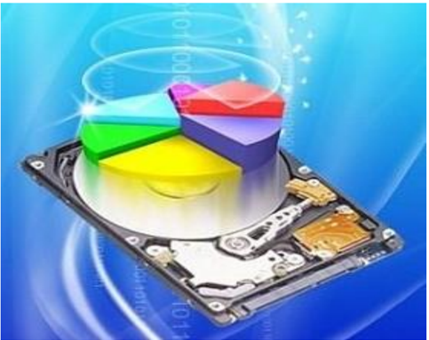
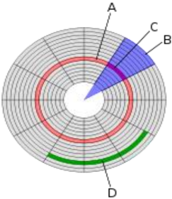

المستوى: السنة الأولى ثانوي (1AS)
المدة الزمنية: 04 ساعات (أسبوعان: حصتان نظريتان وحصتان تطبيقيتان)
في نهاية هذه الوحدة، يكون المتعلم قادرًا على أن:
| الحصة | السؤال المركزي | ناتج التعلّم القابل للملاحظة |
|---|---|---|
| 1 — نظري (الأسبوع 1) | ما الذي يجعل العتاد الذي جمعناه حاسوبًا يعمل؟ | يذكر أربع وظائف لنظام التشغيل ويصنّف أنظمة معروفة. |
| 2 — تطبيقي (الأسبوع 1) | كيف يختار الحاسوب من أين يُقلع؟ | يحدّد ترتيب الإقلاع في آلة افتراضية ويُعدّها للتثبيت. |
| 3 — نظري (الأسبوع 2) | كيف نُحضّر القرص لاستقبال النظام؟ | يميّز بين التقسيم والتهيئة ويرتّب مراحل التثبيت. |
| 4 — تطبيقي (الأسبوع 2) | كيف يجري تثبيت حقيقي خطوة بخطوة؟ | يُكمل تثبيت نظام في الآلة الافتراضية ويوثّق مراحله. |
فكرة الوحدة: في الوحدة 02 جمعنا العتاد. لكن حاسوبًا بلا نظام تشغيل يشبه سيارة جديدة بلا سائق: كل القطع موجودة، ولا أحد ينسّق بينها. في هذه الوحدة نتعرّف على هذا «السائق»، وكيف نُدخله إلى الحاسوب أول مرة.
نظام التشغيل (Operating System / Système d'exploitation) مجموعة من البرامج المتكاملة التي تُدير عتاد الحاسوب وبرامجه، وتشكّل الوسيط بين المستخدم والجهاز. هو أول برنامج كبير يُشحن في الذاكرة عند تشغيل الحاسوب، وآخر برنامج يتوقف عند إطفائه.
المستخدم ⇄ التطبيقات (متصفح، معالج نصوص، ألعاب) ⇄ نظام التشغيل ⇄ العتاد (معالج، ذاكرة، قرص، شاشة)
لا يخاطب التطبيق العتادَ مباشرة: عندما تضغط طباعة في معالج النصوص، يطلب البرنامج ذلك من نظام التشغيل، وهو الذي يتعامل مع الطابعة عبر برنامج التعريف (Driver / Pilote) الخاص بها.
| الوظيفة | ماذا يفعل؟ | مثال من حياتك |
|---|---|---|
| إقلاع الحاسوب وتهيئته للعمل | يُشحن بعد البرنامج الثابت ويُجهّز الأجهزة والخدمات | ظهور شاشة تسجيل الدخول بعد التشغيل |
| إدارة المعالج | يوزّع وقت المعالج بين البرامج المفتوحة (تعدد المهام / Multitasking) | تستمع إلى الموسيقى وأنت تكتب بحثك |
| إدارة الذاكرة | يمنح كل برنامج جزءًا من RAM ويسترجعه عند إغلاقه | إغلاق برنامج ثقيل يجعل الجهاز أسرع |
| إدارة الملفات والتخزين | ينظّم الملفات في مجلدات وأقراص ويتحكم في القراءة والكتابة | مستكشف الملفات، القرص C: |
| إدارة الأجهزة الملحقة | يتعرّف على الأجهزة ويشغّلها عبر برامج التعريف | إدخال ذاكرة USB فتظهر بعد ثوانٍ |
| توفير واجهة الاستخدام | واجهة بيانية (GUI) بالنوافذ والأيقونات، أو سطر أوامر | قائمة ابدأ، شاشة اللمس في الهاتف |
| الأمان والحسابات | يحمي الملفات بكلمات المرور والصلاحيات | حساب مسؤول وحساب قياسي (الوحدة 04) |
| تشغيل التطبيقات | يوفّر للبرامج «أرضية» تعمل فوقها | تطبيق صُمّم لـ Windows لا يعمل مباشرة على Android |
| الفئة | أمثلة حالية | ملاحظة |
|---|---|---|
| أنظمة الحواسيب (مكتبي ومحمول) | Windows 11، macOS، توزيعات Linux مثل Ubuntu وDebian وLinux Mint، ChromeOS | macOS نظام حواسيب Mac من Apple، وليس نظام هواتف |
| أنظمة الهواتف والألواح | Android، iOS (هاتف iPhone)، iPadOS (لوح iPad) | Android مبني على نواة Linux |
| أنظمة الخوادم (إثراء) | Windows Server، Linux | تشغّل المواقع والخدمات السحابية |
| أنظمة مدمجة (إثراء) | أنظمة التلفاز الذكي والساعات والسيارات | مخفية داخل الأجهزة اليومية |
تحديث عن الكتاب المدرسي (2015): أنظمة مثل Windows Phone وBlackBerry OS وIBM OS/2 توقفت ولم تعد مستعملة. وكان Mac OS مذكورًا خطأً بين أنظمة الهواتف؛ الصحيح أنه نظام حواسيب، وأنظمة Apple للهواتف والألواح هي iOS وiPadOS.
الإقلاع (Boot / Démarrage) هو سلسلة العمليات من الضغط على زر التشغيل إلى ظهور شاشة الدخول:
البرنامج الثابت (Firmware / Micrologiciel) برنامج صغير مخزّن في شريحة على اللوحة الأم، يعمل قبل نظام التشغيل.
| BIOS (Basic Input/Output System) | UEFI (Unified Extensible Firmware Interface) | |
|---|---|---|
| الحالة | الاسم القديم، في الأجهزة السابقة لـ 2012 تقريبًا | المعيار الحديث في كل الأجهزة الحالية |
| الواجهة | نصّية بلوحة المفاتيح فقط | غالبًا بيانية وتدعم الفأرة |
| الأقراص | يقلع من أقراص MBR | يقلع من أقراص GPT الكبيرة |
| الحماية | محدودة | الإقلاع الآمن (Secure Boot) |
ملاحظة لغوية: ما زال كثير من الناس يسمّون شاشة UEFI «البيوس» (BIOS)، وتظهر الكلمة في بعض الأجهزة الحديثة أيضًا. حين تسمعها، اعلم أن المقصود هو برنامج الإعداد (Setup) الخاص بالبرنامج الثابت.
لا يُثبَّت Windows 11 رسميًا إلا على جهاز يوفّر:
لهذا السبب لا يمكن تثبيت Windows 11 رسميًا على بعض الحواسيب القديمة التي تعمل جيدًا بـ Windows 10 أو 8.1.
يُقلع الحاسوب عادة من قرصه الداخلي (SSD أو HDD). لتثبيت نظام جديد، يجب أن يُقلع من وسيط التثبيت، وهو اليوم ذاكرة USB قابلة للإقلاع (Bootable USB) تحتوي على صورة ISO للنظام. (كانت الأقراص المضغوطة CD/DVD تُستعمل سابقًا، ولم تعد معظم الحواسيب الحديثة تحتوي على قارئ لها.)
صورة ISO (ISO image): ملف واحد يحمل نسخة كاملة من قرص التثبيت. نُنزّله من الموقع الرسمي للنظام، ثم ننقله إلى ذاكرة USB بأداة خاصة تجعلها قابلة للإقلاع.
| الطريقة | متى نستعملها؟ | ماذا نفعل؟ |
|---|---|---|
| قائمة الإقلاع (Boot menu) | لإقلاع مرة واحدة دون تغيير دائم | نضغط مفتاحًا خاصًا فور التشغيل ونختار ذاكرة USB من القائمة |
| برنامج الإعداد (UEFI Setup) | لتغيير الترتيب بشكل دائم | ندخل الإعداد، ونضع USB في المرتبة الأولى، ثم نحفظ ونخرج |
خطوات تغيير الإقلاع الأول في برنامج الإعداد:
F10، ويُذكر المفتاح الصحيح في أسفل الشاشة.لا يوجد مفتاح موحّد، فهو يختلف حسب صانع الجهاز أو اللوحة الأم، ويظهر عادة لثوانٍ على الشاشة الأولى. أمثلة شائعة:
| الغاية | مفاتيح شائعة |
|---|---|
| الدخول إلى برنامج الإعداد | Del (Suppr) أو F2، وأحيانًا F1 أو F10 أو Esc |
| فتح قائمة الإقلاع | F12 أو F11 أو F9 أو F8 أو Esc |
طريقة من داخل Windows 11: إن كان الإقلاع سريعًا جدًا ولم تلحق بالضغط، استعمل: الإعدادات ← النظام ← الاسترداد ← بدء التشغيل المتقدم، ثم اختر الدخول إلى إعدادات البرنامج الثابت UEFI.
قاعدة سلامة: لا تغيّر في برنامج الإعداد إلا ما طُلب منك. إعدادات أخرى (مثل إيقاف الإقلاع الآمن أو تغيير وضع القرص) قد تمنع النظام من الإقلاع. في المخبر، يُنفَّذ هذا النشاط داخل الآلة الافتراضية أو يعرضه الأستاذ.
تخيّل أنك اشتريت خزانة كبيرة فارغة لغرفتك:
القرص قطعة واحدة ماديًا، لكن يمكن تقسيمه منطقيًا إلى أجزاء مستقلة تسمى التجزئات (Partitions). في Windows تظهر كل تجزئة كقرص منفصل بحرف: C: وD:...

فوائد التقسيم:
C:) عن الملفات الشخصية (D:): إذا أعدنا تثبيت النظام تبقى الملفات سليمة.ملاحظة: عند تثبيت Windows 11 على قرص فارغ، ينشئ برنامج الإعداد تلقائيًا تجزئات صغيرة إضافية (تجزئة الإقلاع EFI وتجزئة الاسترداد Recovery). هي ضرورية لعمل النظام، فلا تحذفها.
جدول التقسيم: MBR أم GPT؟ يُكتب في بداية كل قرص «فهرس» يصف تجزئاته:
| MBR (النمط القديم) | GPT (المعيار الحديث) | |
|---|---|---|
| حجم القرص | حتى 2 TB | أكبر بكثير |
| عدد التجزئات | 4 تجزئات أساسية | حتى 128 تجزئة في Windows |
| البرنامج الثابت | BIOS القديم | UEFI — وهو المطلوب لـ Windows 11 |
التهيئة هي تجهيز تجزئة لتخزين الملفات بكتابة نظام ملفات (File system / Système de fichiers) عليها؛ وهو الطريقة التي يسجّل بها النظام أماكن الملفات وأسماءها وأحجامها.
| نظام الملفات | أين يُستعمل؟ | ميزة أو حدّ |
|---|---|---|
| NTFS | قرص Windows الداخلي | يدعم الملفات الكبيرة والصلاحيات؛ قد لا تقرؤه بعض الأجهزة الأخرى |
| FAT32 | ذاكرات USB وبطاقات الذاكرة القديمة | تقرؤه كل الأجهزة تقريبًا، لكن لا يقبل ملفًا أكبر من 4 GB |
| exFAT | ذاكرات USB وبطاقات الذاكرة الحديثة | يقبل الملفات الكبيرة ومتوافق مع Windows وmacOS ومعظم الهواتف |
| ext4 | Linux (مثل Ubuntu) | نظام الملفات الافتراضي في كثير من توزيعات Linux |
تهيئة سريعة أم كاملة؟
تحذير: التهيئة — سريعة كانت أو كاملة — تمحو محتوى التجزئة. قبل أي تهيئة: تأكّد من حرف القرص الصحيح، وانسخ ملفاتك المهمة احتياطيًا.
حالة واقعية: صديقك نسخ فيلمًا حجمه 6 GB إلى ذاكرة USB، فظهرت رسالة «الملف كبير جدًا» رغم وجود مساحة فارغة كافية. السبب: الذاكرة مهيّأة بـ FAT32. الحل: نسخ ملفاته الأخرى ثم تهيئتها بـ exFAT.
كيف نهيّئ ذاكرة USB في Windows 11؟ مستكشف الملفات ← هذا الكمبيوتر ← نقر بالزر الأيمن على الذاكرة ← تهيئة (Format) ← اختيار نظام الملفات وتسمية الوحدة ← تهيئة سريعة ← بدء.
| وجه المقارنة | التقسيم (Partitioning) | التهيئة (Formatting) |
|---|---|---|
| السؤال الذي يجيب عنه | كم جزءًا في القرص؟ وما حجم كل جزء؟ | كيف تُنظَّم الملفات داخل الجزء؟ |
| ما يُكتب على القرص | جدول التجزئات (MBR أو GPT) | نظام الملفات (NTFS، exFAT، ext4...) |
| الترتيب | يأتي أولًا | يأتي بعد التقسيم، لكل تجزئة على حدة |
| النتيجة | أجزاء بأحرف أو أسماء مختلفة | جزء جاهز لاستقبال الملفات |
| أداة في Windows | إدارة الأقراص (Disk Management) | مستكشف الملفات أو إدارة الأقراص |
أداة للاكتشاف: في Windows افتح إدارة الأقراص بـ
Win + Xثم «إدارة الأقراص». سترى كل قرص وتجزئاته ونظام ملفات كل تجزئة. في المخبر: نلاحظ فقط ولا نغيّر شيئًا.
كان الكتاب المدرسي يميّز بين نوعين من التهيئة:

هذا التقسيم إلى مسارات دائرية خاص بالأقراص الميكانيكية HDD. أقراص SSD لا تدور ولا تحتوي على مسارات، لكنها تُقسَّم وتُهيَّأ منطقيًا بالطريقة نفسها.
التثبيت (Installation) هو نسخ ملفات نظام التشغيل من وسيط التثبيت إلى القرص الداخلي وإعدادها لتعمل بشكل دائم. يتولاه برنامج خاص يسمى برنامج الإعداد أو المثبِّت (Setup / Installer) يقترح علينا مراحل نتبعها بالترتيب.
متى نحتاج إلى تثبيت نظام؟ حاسوب جديد بقرص فارغ، أو تغيير القرص المعطّل، أو نظام أصابه عطل كبير أو برنامج خبيث، أو إعادة تجهيز حواسيب المخبر في بداية السنة.
قد يختلف شكل الشاشات وترتيبها قليلًا من إصدار لآخر، لكن المراحل الأساسية هي:
المرحلة الأولى: برنامج الإعداد (من ذاكرة USB)
المرحلة الثانية: إعداد الاستعمال الأول (OOBE — Out-of-Box Experience)
قارن مع الكتاب المدرسي: المراحل الكبرى نفسها بقيت (اللغة، الشروط، موضع التثبيت، المستخدم وكلمة المرور، المنطقة الزمنية، الشبكة)، لكن الوسيط أصبح ذاكرة USB، وأُضيفت مراحل الحساب والخصوصية، ويُضبط الوقت تلقائيًا عبر الإنترنت.
مُثبِّت Ubuntu يسير بالمنطق نفسه: اللغة ← لوحة المفاتيح ← الشبكة ← نوع التثبيت ← إعداد القرص (محو القرص وتثبيت Ubuntu، أو تقسيم يدوي) ← إنشاء الحساب (الاسم، اسم الجهاز، كلمة المرور) ← المنطقة الزمنية ← مراجعة الاختيارات ← التثبيت ← إعادة التشغيل. ويُهيّئ تجزئته عادة بنظام الملفات ext4.
الآلة الافتراضية (Virtual Machine / Machine virtuelle) «حاسوب داخل الحاسوب»: برنامج يقتطع جزءًا من المعالج والذاكرة والقرص الحقيقي ليصنع منه حاسوبًا وهميًا له UEFI خاص به وقرص افتراضي (ملف كبير). كل ما نفعله داخله — تقسيم، تهيئة، تثبيت — لا يمسّ الحاسوب الحقيقي.
نستعمل VirtualBox (برنامج محاكاة مجاني من Oracle)، ونثبّت فيه Ubuntu (مجاني)؛ ويمكن للأستاذ عرض تثبيت Windows 11 بنسخة تقييمية (Evaluation) على جهاز العرض.
التجهيزات اللازمة (يحضّرها الأستاذ أو مسؤول المخبر مسبقًا): VirtualBox مثبّت، وملف ISO منسوخ على كل جهاز، ومساحة فارغة لا تقل عن 25 GB تقريبًا، و8 GB من RAM في الحاسوب الحقيقي للعمل براحة، وتفعيل خاصية المحاكاة في المعالج (VT-x أو AMD-V) من برنامج الإعداد UEFI.
| المهمة | ما يجب إنجازه | مؤشر النجاح |
|---|---|---|
| 1 | إنشاء آلة جديدة باسم «تثبيت_اسمك»، واختيار ملف ISO | الآلة تظهر في قائمة VirtualBox |
| 2 | إلغاء التثبيت التلقائي (Unattended installation) حتى نرى المراحل بأنفسنا | يظهر برنامج الإعداد عند التشغيل لا تثبيت آلي |
| 3 | تخصيص الذاكرة (4 GB إن أمكن) ومعالجين، وقرص افتراضي بحجم 25 GB | ملخّص الإعدادات صحيح قبل الإنهاء |
| 4 | فتح إعدادات الآلة ← النظام ← ترتيب الإقلاع، ومقارنته بترتيب UEFI الحقيقي | يشرح شفويًا من أين ستُقلع الآلة ولماذا |
| 5 | تشغيل الآلة والتأكد من ظهور شاشة برنامج الإعداد ثم إيقافها | لقطة شاشة لأول نافذة في المثبّت |
| المهمة | ما يجب إنجازه | مؤشر النجاح |
|---|---|---|
| 1 | تشغيل الآلة واتباع المراحل: اللغة، لوحة المفاتيح، الشبكة | يصل إلى مرحلة إعداد القرص |
| 2 | في إعداد القرص: اختيار محو القرص والتثبيت (القرص الافتراضي فقط) | يذكر أن القرص الحقيقي لم يتأثر ولماذا |
| 3 | إنشاء حساب: اسم مستعار، اسم جهاز، كلمة مرور تجريبية | الحساب يقبل الدخول بعد إعادة التشغيل |
| 4 | ملء بطاقة توثيق المراحل أثناء الانتظار: رقم المرحلة، اسمها، ما اخترته | بطاقة مكتملة بالترتيب الصحيح |
| 5 | بعد الدخول: البحث عن «Disks» (الأقراص) وملاحظة التجزئات ونظام الملفات ext4 | يذكر تجزئة واحدة على الأقل ونظام ملفاتها |
إذا كانت حواسيب المخبر ضعيفة أو لا تدعم المحاكاة: يعرض الأستاذ التثبيت على جهازه عبر جهاز العرض، ويملأ التلاميذ بطاقة التوثيق؛ ثم يُنجزون نشاط بطاقات الترتيب: بطاقات مكتوب على كل منها مرحلة (تغيير الإقلاع الأول، اختيار اللغة، الموافقة على الترخيص، اختيار التجزئة، التهيئة، نسخ الملفات، إنشاء الحساب، الخصوصية...)، يرتّبها كل فوج على الطاولة ويبرّر ترتيبه.
D: مستقلة عن تجزئة النظام C:؟قبل مغادرة الحصة الأخيرة، اكتب في دقيقة واحدة:
يستعملها الأستاذ في بداية الوحدة 04: يُجيب عن السؤال المتكرر ويصحّح الخلط الشائع بين التقسيم والتهيئة.
C: فقط وتبقى ملفات D: سليمة؛ مع التنبيه أن هذا لا يغني عن النسخ الاحتياطي على وسيط آخر، لأن تلف القرص كله يُضيّع التجزئتين معًا.| المصطلح | العربية | الشرح المختصر |
|---|---|---|
| Operating System (OS) / Système d'exploitation | نظام التشغيل | البرامج التي تُدير العتاد وتشغّل التطبيقات |
| Driver / Pilote | برنامج التعريف | برنامج يسمح للنظام بتشغيل جهاز معيّن |
| Multitasking / Multitâche | تعدد المهام | تشغيل عدة برامج في الوقت نفسه |
| Boot / Démarrage | الإقلاع | سلسلة بدء تشغيل الحاسوب حتى ظهور النظام |
| Firmware / Micrologiciel | البرنامج الثابت | برنامج اللوحة الأم الذي يعمل قبل النظام |
| UEFI / BIOS | — | البرنامج الثابت الحديث / اسمه القديم |
| Boot order | ترتيب الإقلاع | ترتيب الوسائط التي يبحث فيها الحاسوب عن نظام |
| Boot menu | قائمة الإقلاع | قائمة لاختيار وسيط الإقلاع مرة واحدة |
| Secure Boot | الإقلاع الآمن | السماح بالإقلاع ببرامج موقّعة وموثوقة فقط |
| TPM 2.0 | وحدة النظام الأساسي الموثوق | شريحة تحفظ مفاتيح الحماية والتشفير |
| ISO image | صورة ISO | ملف يحمل نسخة كاملة من قرص التثبيت |
| Partition / Partition | تجزئة | جزء منطقي مستقل من القرص |
| Partitioning / Partitionnement | تقسيم القرص | إنشاء التجزئات وتحديد أحجامها |
| Formatting / Formatage | التهيئة | كتابة نظام ملفات على تجزئة لتستقبل الملفات |
| File system / Système de fichiers | نظام الملفات | طريقة تنظيم الملفات وتسجيل أماكنها (NTFS، exFAT...) |
| MBR / GPT | — | نمطا جدول التجزئات: القديم / الحديث |
| Setup / Installer | برنامج الإعداد / المثبّت | البرنامج الذي يقود مراحل التثبيت |
| Virtual Machine / Machine virtuelle | الآلة الافتراضية | حاسوب وهمي يعمل داخل حاسوب حقيقي |